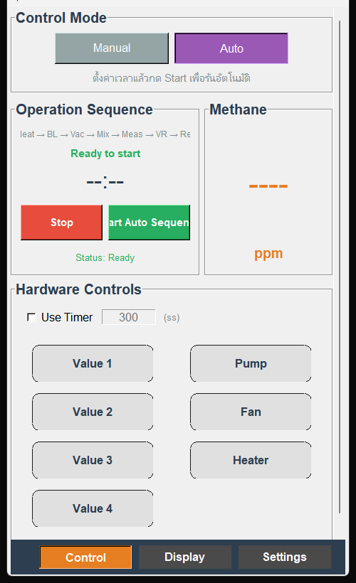
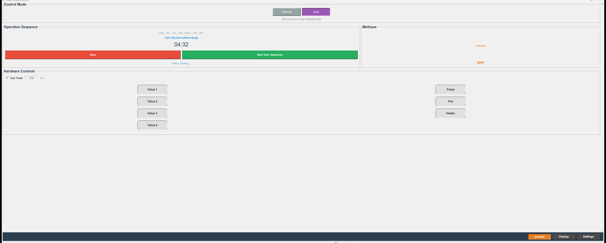
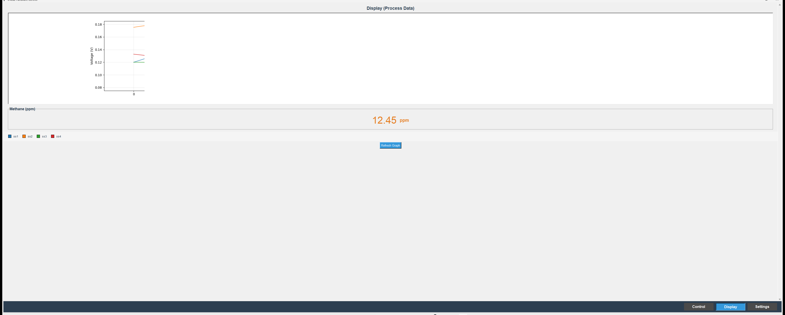

คู่มือสรุปการใช้งานโปรแกรม eNose Hardware Control บน Raspberry Pi — วัดความเข้มข้นก๊าซมีเทนและอ่านค่า ppm ในหน้าเดียว
| ขั้น | อุปกรณ์ที่เปิด (+Heater) | บันทึก |
|---|---|---|
| Op1 Heat | — | — |
| Op2 Baseline | V2, V3, Pump | เริ่ม |
| Op3 Vacuum | V3, Pump | ต่อ |
| Op4 Mix Air | Fan | ต่อ |
| Op5 Measure | V1, V4, Pump | ต่อ |
| Op6 Vac Ret | V4, Pump | ต่อ |
| Op7 Recovery | V2, V3 | → ประมวลผล |
Cloud: — = ยังไม่ตั้งค่าreading/data/ · .csv → acquisition/processed_data/| อาการ | วิธีแก้ |
|---|---|
| GUI ไม่เปิด | ใช้จอ Pi/VNC → รัน run_gui.sh |
| ppm = ---- | รอครบ Op1–Op7 · เช็ก CSV |
| กราฟไม่ขึ้น | กด Refresh · ติดตั้ง matplotlib |
| ลำดับค้าง | Heating นาน — ดูตัวนับ · กด Stop |
| ไม่มีไฟล์ | ต้องกด Start · อย่าปิด Pi ก่อน Stop |


